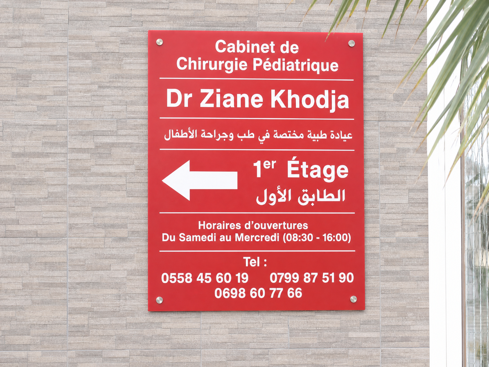
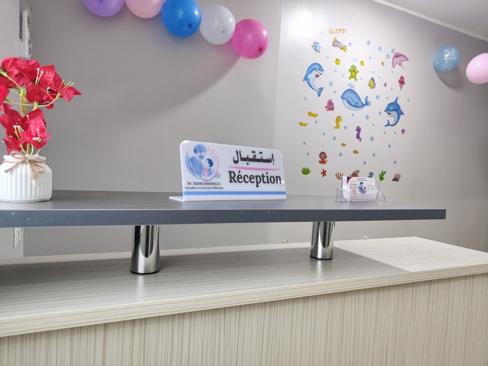
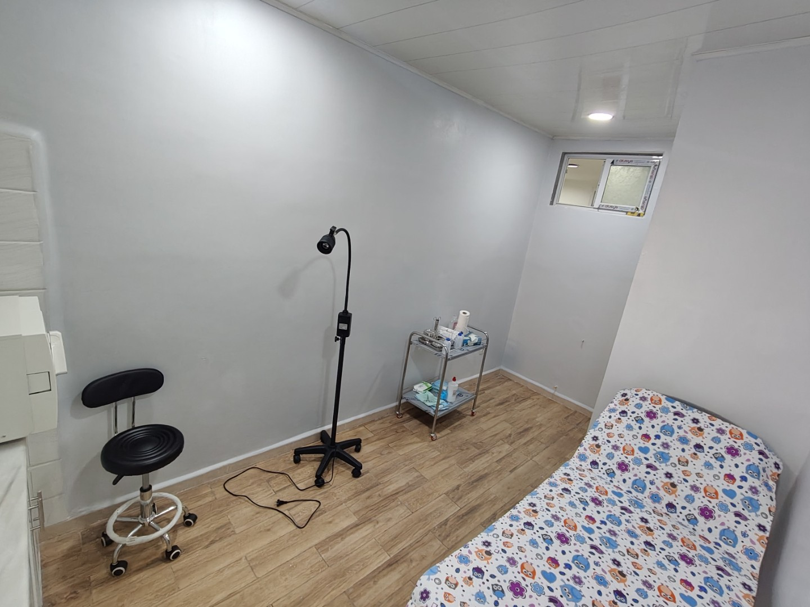
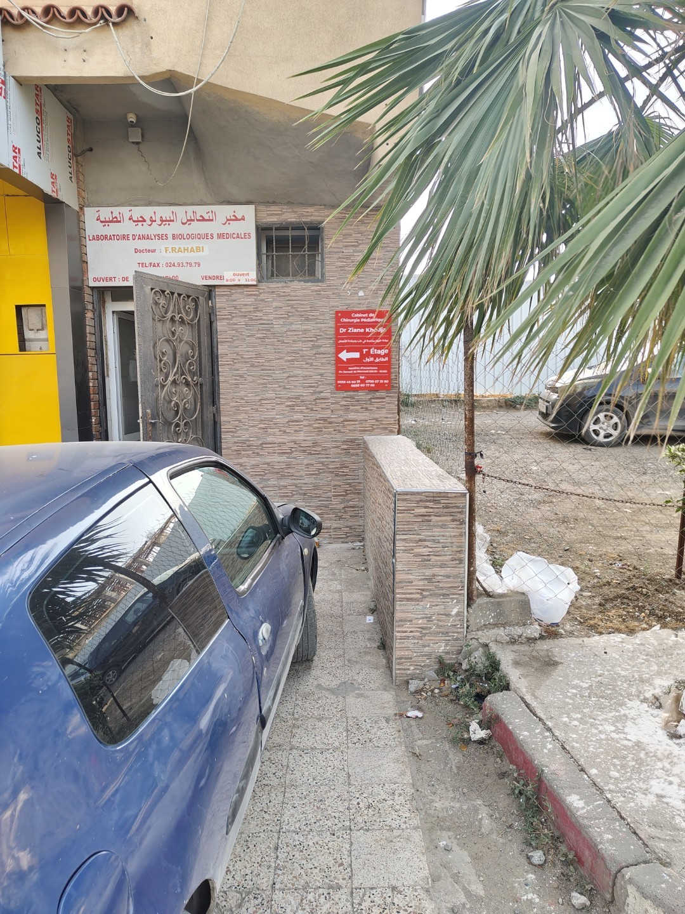

Chaque enfant mérite
des soins attentifs.
كل طفل يستحق
عناية فائقة.
Le cabinet du Dr Ziane Khodja Djamila accompagne les familles de la région de Boumerdès en chirurgie pédiatrique : de la consultation à l'acte, dans un cadre rassurant, pensé pour les enfants comme pour leurs parents.
تواكب عيادة الدكتورة زيان خوجة جميلة عائلات منطقة بومرداس في جراحة الأطفال: من الاستشارة إلى العملية، في جو مطمئن، مُهيأ للأطفال وأوليائهم.

Le cabinet
العيادة
Après 15 années passées au sein de plusieurs établissements hospitaliers, le Dr Ziane Khodja Djamila a ouvert son cabinet de chirurgie pédiatrique à Ouled Moussa afin d'offrir aux familles de la wilaya de Boumerdès un suivi de proximité, sans compromis sur la rigueur médicale acquise en milieu hospitalier.
Le cabinet prend en charge les enfants de la naissance à l'adolescence, pour des actes programmés comme pour des situations d'urgence, dans un environnement calme, pensé pour rassurer autant l'enfant que le parent.
بعد 15 سنة من العمل في عدة مؤسسات استشفائية، فتحت الدكتورة زيان خوجة جميلة عيادتها لجراحة الأطفال بأولاد موسى، لتقدّم لعائلات ولاية بومرداس متابعة قريبة منهم، دون التنازل عن الدقة الطبية المكتسبة في الوسط الاستشفائي.
تستقبل العيادة الأطفال من الولادة إلى المراهقة، سواء للتدخلات المبرمجة أو الحالات المستعجلة، في جو هادئ، مُصمَّم لطمأنة الطفل والولي على حد سواء.

Un parcours hospitalier, au service de votre enfant
مسار استشفائي في خدمة طفلكم
Le Dr Ziane Khodja Djamila est chirurgienne pédiatre, diplômée et spécialisée dans la prise en charge chirurgicale des enfants de la naissance à l'adolescence. Elle a exercé pendant quinze ans au sein de plusieurs établissements hospitaliers, dont le CHU Mustapha Pacha et le CHU Lamine Debaghine de Bab El Oued (ex-hôpital Maillot), ainsi que les hôpitaux d'Aïn Taya, de Birtraria, de Guelma et de Thénia. Elle a ensuite fait le choix d'ouvrir son propre cabinet à Ouled Moussa afin d'offrir aux familles de la wilaya de Boumerdès un suivi de proximité, avec la même exigence médicale.
الدكتورة زيان خوجة جميلة جراحة أطفال حاصلة على شهادة تخصص، متخصصة في التكفل الجراحي بالأطفال من الولادة إلى المراهقة. عملت لمدة خمس عشرة سنة في عدة مؤسسات استشفائية، من بينها المركز الاستشفائي الجامعي مصطفى باشا والمركز الاستشفائي الجامعي الأمين دبّاغين بباب الوادي (مستشفى مايّو سابقاً)، إضافة إلى مستشفيات عين طاية وبيرطراريا وقالمة والثنية. بعدها اختارت فتح عيادتها الخاصة بأولاد موسى لتقدّم لعائلات ولاية بومرداس متابعة قريبة منهم، بنفس الصرامة الطبية.
- 15 ans d'expérience en milieu hospitalier avant l'ouverture du cabinet
- 15 سنة خبرة في الوسط الاستشفائي قبل فتح العيادة
- Chirurgie pédiatrique — prise en charge de la naissance à l'adolescence (0–16 ans)
- جراحة الأطفال — تكفل من الولادة إلى المراهقة (0-16 سنة)
- Consultations sur rendez-vous, par téléphone ou WhatsApp
- استشارات بموعد مسبق، عبر الهاتف أو واتساب
Un espace conçu pour les enfants
فضاء مُصمَّم للأطفال
Découvrez les locaux du cabinet : salle d'attente, salle de consultation, et espaces de soins adaptés aux tout-petits.
اكتشفوا مرافق العيادة: صالة الانتظار، قاعة الاستشارة، وأماكن العلاج المُهيأة للصغار.






Les actes pratiqués au cabinet
الأعمال الطبية المُقدَّمة بالعيادة
Chaque acte est expliqué en consultation, à un rythme adapté aux questions des parents.
يتم شرح كل عمل خلال الاستشارة، بالوتيرة التي تناسب أسئلة الأولياء.
Circoncision
الختان
Un acte fréquent, réalisé dans des conditions d'hygiène strictes. La consultation permet de choisir le moment le plus adapté à l'enfant.
عمل شائع، يُنجز في ظروف نظافة صارمة. تسمح الاستشارة باختيار الوقت الأنسب للطفل.
Hernies (inguinale, ombilicale)
الفتق (الإربي والسري)
Fréquentes chez le nourrisson, elles se traitent simplement si elles sont prises en charge à temps.
شائعة عند الرضّع، وعلاجها بسيط إذا تمت متابعتها في الوقت المناسب.
Ectopie testiculaire
الخصية الهاجرة
Un dépistage précoce évite des complications à l'âge adulte. Un simple examen suffit souvent à orienter la décision.
الكشف المبكر يجنّب مضاعفات في سن الرشد. غالبا ما يكفي فحص بسيط لتوجيه القرار.
Malformations congénitales
التشوهات الخلقية
Un suivi dès les premiers mois permet d'anticiper la meilleure prise en charge, en lien avec la maternité.
المتابعة منذ الأشهر الأولى تسمح بتحديد أفضل تكفل، بالتنسيق مع مصلحة الولادة.
Fractures & traumatologie
الكسور والرضوض
Chutes et accidents domestiques : une évaluation rapide évite les complications à long terme.
السقوط والحوادث المنزلية: التقييم السريع يجنّب مضاعفات على المدى الطويل.
Urgences pédiatriques
استعجالات الأطفال
Plaies, traumatismes, douleurs aiguës : le cabinet prend en charge les urgences courantes durant ses horaires d'ouverture.
الجروح، الرضوض، الآلام الحادة: تتكفل العيادة بالحالات المستعجلة الشائعة خلال أوقات العمل.
Suivi du nouveau-né
متابعة المولود الجديد
Un accompagnement dès les premiers jours pour détecter tôt toute anomalie et rassurer les jeunes parents.
مرافقة منذ الأيام الأولى للكشف المبكر عن أي خلل وطمأنة الوالدين الجدد.
Brûlures & plaies
الحروق والجروح
Une prise en charge rapide limite les cicatrices et les complications, notamment chez le tout-petit.
التكفل السريع يحد من الندوب والمضاعفات، خاصة عند الرضيع.
Pourquoi consulter un chirurgien pédiatrique ?
لماذا استشارة جراح مختص في الأطفال؟
Un enfant n'est pas un adulte en miniature. Sa croissance, son anatomie et sa manière d'exprimer la douleur demandent une prise en charge spécifique — et une explication adaptée à ce que les parents peuvent comprendre et absorber.
الطفل ليس نسخة مصغرة عن الراشد. فنموّه وتركيبته الجسدية وطريقة تعبيره عن الألم تتطلب تكفلاً خاصاً — وشرحاً يتناسب مع ما يستطيع الأولياء استيعابه.
- Un diagnostic précis évite des inquiétudes inutiles.
- تشخيص دقيق يجنّبكم قلقاً لا داعي له.
- Chaque acte est expliqué avant d'être réalisé.
- كل عمل يُشرح قبل إنجازه.
- Une intervention précoce est souvent plus simple qu'une prise en charge tardive.
- التدخل المبكر غالباً ما يكون أبسط من التكفل المتأخر.
- Vous repartez avec des consignes claires de suivi à la maison.
- تغادرون بتوجيهات واضحة للمتابعة في المنزل.
Ce que disent les parents
ماذا يقول الأولياء
« Une prise en charge compétente, humaine et pleine de douceur pour mon enfant. Accueil chaleureux et traitement respectueux du début à la fin. »
« تكفل كفؤ وإنساني ومليء بالرفق بطفلي. استقبال دافئ ومعاملة محترمة من البداية إلى النهاية. »
« Un service excellent et une praticienne très à l'écoute. La consultation de mon petit-fils m'a pleinement rassuré(e). »
« خدمة ممتازة وطبيبة تُصغي جيداً. اطمأننت تماماً بعد استشارة حفيدي. »
« Un accueil très chaleureux et convivial lors du rendez-vous de mon enfant. Un service excellent — tous mes encouragements au cabinet. »
« استقبال دافئ وودّي جداً خلال موعد طفلي. خدمة ممتازة — كل التوفيق للعيادة. »
Ce que les parents demandent le plus
أكثر ما يسأل عنه الأولياء
Oui, les consultations se font sur rendez-vous par téléphone ou WhatsApp, afin de limiter le temps d'attente.
نعم، الاستشارات تتم بموعد مسبق عبر الهاتف أو واتساب، لتقليص وقت الانتظار.
Dès la naissance : le suivi des nouveau-nés fait partie des actes courants du cabinet.
منذ الولادة: متابعة المولود الجديد من ضمن الأعمال المعتادة بالعيادة.
Il n'y a pas d'âge unique : la consultation permet d'évaluer le moment le plus adapté selon l'état de l'enfant.
لا يوجد سن موحد: الاستشارة تسمح بتحديد الوقت الأنسب حسب حالة الطفل.
Oui, les urgences courantes (plaies, traumatismes, suspicion de fracture) sont prises en charge pendant les horaires d'ouverture.
نعم، الحالات المستعجلة الشائعة (جروح، رضوض، شك في كسر) تُعالج خلال أوقات العمل.
À Ouled Moussa, wilaya de Boumerdès — facilement accessible depuis Boudouaou et Khemis El Khechna. Voir la carte ci-dessous.
بأولاد موسى، ولاية بومرداس — يسهل الوصول إليها من بودواو وخميس الخشنة. انظر الخريطة أسفله.
Le tarif dépend du type de consultation ou d'acte. Contactez le cabinet par téléphone ou WhatsApp pour connaître les tarifs et les modalités de prise en charge avant votre rendez-vous.
يختلف السعر حسب نوع الاستشارة أو العمل. تواصلوا مع العيادة عبر الهاتف أو واتساب لمعرفة الأسعار وكيفيات التكفل قبل الموعد.
En dehors des horaires d'ouverture du cabinet, rendez-vous directement au service des urgences pédiatriques de l'hôpital le plus proche.
خارج أوقات عمل العيادة، توجهوا مباشرة إلى مصلحة استعجالات الأطفال بأقرب مستشفى.